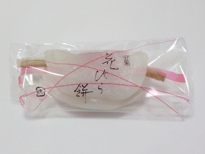
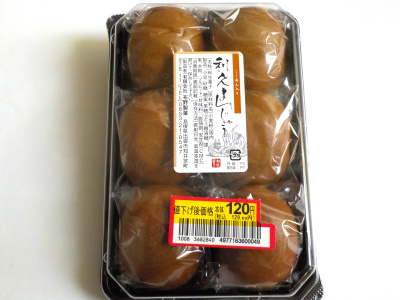

布野製菓の花びら餅。
2025/01/04

ごぼうが柔らかく甘くクセが少なかったです。食べやすい花びら餅だと思いました。
餡子ばっかりじゃなく求肥もしっかりあり、お餅らしくてよかったです。
島根県出雲市知井宮町978-11
2025/01/04

ごぼうが柔らかく甘くクセが少なかったです。食べやすい花びら餅だと思いました。
餡子ばっかりじゃなく求肥もしっかりあり、お餅らしくてよかったです。
2022/10/08

出雲市にも利休まんじゅうがあるんですね。私が利休まんじゅうで思い浮かべるモノより、色が濃くて大きいです。
ネットで検索したら利休まんじゅうは色々あるみたいですね。
これはこれで利休まんじゅうでいいかなと思いました。